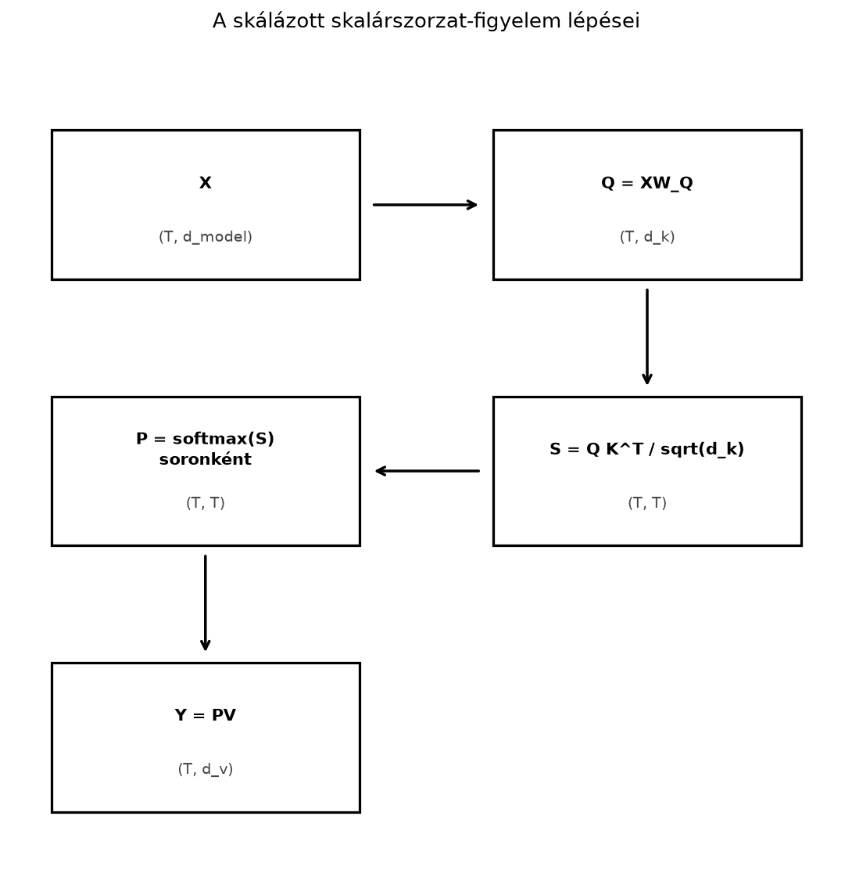
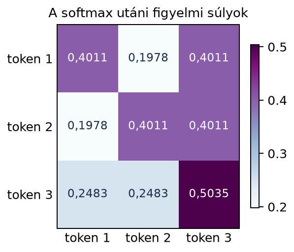

Képzeljük el, hogy egy nyelvi modell ezt a mondatot dolgozza fel, tokenek sorozataként: „a macska azért nem ment át az úton, mert fáradt volt”. A modellnek tudnia kell, hogy a „fáradt” jelző nem feltétlenül a legközelebbi tokenre, „az útra” utal, hanem a „macskára”. A mondat szavai közötti kapcsolatot nem elég a szomszédságból kiolvasni: minden tokennek valahogyan rá kell tudnia kérdezni a többi tokenre, majd a válaszokból súlyozott összegzést kell készítenie. A figyelemmechanizmus (attention) éppen ezt teszi: minden tokenből létrehoz egy lekérdezést (query), egy kulcsot (key) és egy értéket (value), majd a lekérdezések és kulcsok skalárszorzatos hasonlóságával súlyozza az értékvektorokat.
Ebben az alfejezetben a transformer figyelem legalapvetőbb képletét, a skálázott skalárszorzat-figyelmet (scaled dot-product attention) vezetjük le mátrixalakban. A cél, hogy a képlet minden tényezőjét pontosan értsük, és egy kis példát kézzel is végig tudjunk számolni.
A figyelem hasonlít egy keresőmotorhoz. A rendelkezésre álló dokumentumoknak van egy rövid kulcsa (például címke vagy összefoglaló) és maga a dokumentum, az érték. A felhasználó kérdése a lekérdezés. A kereső kiszámolja, hogy a lekérdezés mennyire hasonlít az egyes kulcsokra, majd a hasonlóságokkal arányosan átlagolja az értékeket.
A transformerben minden tokenhez három vektort rendelünk:
A és közötti skalárszorzat adja meg, hogy az -edik token mennyire „keres rá” a -edik tokenre. A kapott hasonlóságokat normalizáljuk, majd az értékvektorok súlyozott átlagaként kapjuk az -edik token új reprezentációját.
A számítás folyamata egy képpel is összefoglalható:

Az ábra tehát azt mondja, hogy a tokenek beágyazásait soronként tartalmazó mátrixból lineáris vetítésekkel három mátrixot készítünk (az ábra helytakarékosságból csak -t mutatja, és ugyanígy készül), a lekérdezések és kulcsok szorzatából pontszámmátrix lesz, abból softmax-szal súlymátrix, végül a súlymátrix szorozza az értékmátrixot.
Definíció. Legyen egy token beágyazásait soronként tartalmazó mátrix. A figyelemprojekciók a tanulható
mátrixokkal a következők:
Shape-konvenció. Itt alakja , azaz (be,ki), mert . Ez a dense réteg (ki,be) konvenciójának transzponáltja; a két alak ugyanazt a lineáris leképezést adja, ha . A 22.3.3 alfejezet már a dense konvenciót használja (). A gradientszabály is ennek megfelelően vált: ebben az alfejezetben , a 22.3.3 dense konvenciójában pedig . A részletes shape-táblázatot a 19.3.9 alfejezet (Visszaterjesztés (backpropagation) mátrixalakban) tartalmazza.
A skálázott skalárszorzat-figyelem kimenete
ahol -ot soronként alkalmazzuk. Ha
a skálázott pontszám- vagy logitmátrix, akkor a súlymátrix
elemei a következők. Legyen ; ekkor
A max levonása csak numerikusan stabilabbá teszi a számítást, az arányokat nem változtatja. A kimenet
Jelölési megjegyzés. Ebben az alfejezetben Vaswani és munkatársai cikkének jelölését követjük: a vetítő mátrix jobbról szorozza -et, és alakja . A könyv dense réteg konvenciójában ugyanez a vetítés alakú, méretű -val; a következő alfejezetektől ezt az alakot használjuk. A két írásmód ugyanazt a műveletet jelenti, csak a tárolt mátrix egymás transzponáltja.
A -val való osztás miatt nevezzük az eljárást skálázott skalárszorzat-figyelemnek. A méretű mátrix elemei a lekérdezések és kulcsok összes páronkénti skalárszorzatát tartalmazzák.
A tanulható vetítések szerepének elkülönítésére a kézi példában azt az egyszerűsítést tesszük, hogy , tehát . Így a figyelemmechanizmus magját látjuk, vetítési zaj nélkül. Legyen a három token beágyazása:
Az első token az , a második az , a harmadik a kettő összege irányába mutat.
A pontszámmátrix:
Például az első sor első eleme , az első sor harmadik eleme . A harmadik token önmagával vett skalárszorzata , ezért a mátrix jobb alsó eleme .
Mivel , a skálázott logitmátrix:
Az első sorra például
így az első sor összege
Ezért az első sor súlyai:
A második sor ugyanilyen lépésekkel . A harmadik sorhoz
így a harmadik sor összege
ezért a harmadik sor:
A teljes súlymátrix:
A figyelmi súlyokat hőtérképen is bemutatjuk:

Figyeljük meg, hogy minden sor összege , mert a softmax egy eloszlást készít. A harmadik token a legnagyobb súlyt saját magára teszi, mert és skalárszorzata a legnagyobb.
A kimenet az értékvektorok súlyozott átlaga:
Mivel , az első sorhoz:
A teljes kimenet:
A figyelem tehát minden tokenből a többi token értékvektorának konvex kombinációját készíti. A harmadik token például nem marad pontosan az pontban, hanem az , és irányok súlyozott átlaga felé mozdul.
Állítás. Ha és két olyan -dimenziós véletlen vektor, amelyek mind a koordinátája egymástól független, nulla várható értékű és egységnyi varianciájú, akkor a skalárszorzatuk varianciája . Ezért a mennyiség varianciája .
Szemléletes indoklás. Írjuk ki a skalárszorzatot:
Egyetlen szorzat várható értéke a függetlenség és a nulla várható érték miatt
varianciája pedig
A skalárszorzat varianciája a független tagok miatt az összegek varianciája:
Ezért a skalárszorzat szórása . Ha minden pontszámot elosztunk -val, a kapott logitok varianciája lesz.
Ez az érvelés akkor is hasznos heurisztika, ha a valós és nem pontosan ilyen eloszlású. Nagy mellett a skalárszorzatok tipikus mérete megnő, ezért a softmax bemenetei nagy abszolút értékűek lennének. A softmax ilyenkor majdnem one-hot, vagyis a legnagyobb értékhez -hez közeli, a többihez -hoz közeli súlyt ad. Ez megnehezíti a tanulást, mert a gradiens kicsi lesz, és a modell elveszíti a más tokenekre való rugalmas figyelmet. A -val való osztás ezt a telítődést csökkenti. Ez a kapcsolat a 18.4. alfejezetben (Nagy dimenziós geometria: távolságok és hasonlóságok) látott véletlen vektoros viselkedésre épül.
Fontos szétválasztani a kétféle stabilitást: a -val való osztás a pontszámok statisztikai skáláját és ezzel a softmax telítődését, illetve a gradiens méretét szabályozza; a lebegőpontos túlcsordulást ettől függetlenül a softmax soronkénti maximumának kivonása akadályozza meg. A skálázás nem garantálja, hogy tetszőleges bemenetre ne legyen telített softmax: ha a logitok közel egyenlőtlenek, a kimenet pontosan is lehet közel one-hot, ami önmagában nem számítási hiba.
Az alábbi kód a kézzel kiszámolt példát reprodukálja, és bemutatja az oksági maszkot is:
import numpy as np
X = np.array([[1.0, 0.0],
[0.0, 1.0],
[1.0, 1.0]])
d_k = 2
Q = K = V = X # a kézi példában W_Q = W_K = W_V = I
S = np.einsum('qd,kd->qk', Q, K)
L = S / np.sqrt(d_k)
def softmax_rows(Z):
m = Z.max(axis=1, keepdims=True)
E = np.exp(Z - m)
return E / E.sum(axis=1, keepdims=True)
P = softmax_rows(L)
Y = P @ V
print("P:\n", np.round(P, 4))
print("sorösszegek:\n", np.round(P.sum(axis=1), 4))
print("Y:\n", np.round(Y, 4))
# Oksági maszk: j > i tiltott, ezért -inf
mask = np.array([[0.0, -np.inf, -np.inf],
[0.0, 0.0, -np.inf],
[0.0, 0.0, 0.0]])
P_causal = softmax_rows(L + mask)
Y_causal = P_causal @ V
print("P_causal:\n", np.round(P_causal, 4))
print("Y_causal:\n", np.round(Y_causal, 4))Várt kimenet:
P:
[[0.4011 0.1978 0.4011]
[0.1978 0.4011 0.4011]
[0.2483 0.2483 0.5035]]
sorösszegek:
[1. 1. 1.]
Y:
[[0.8022 0.5989]
[0.5989 0.8022]
[0.7517 0.7517]]
P_causal:
[[1. 0. 0. ]
[0.3302 0.6698 0. ]
[0.2483 0.2483 0.5035]]
Y_causal:
[[1. 0. ]
[0.3302 0.6698]
[0.7517 0.7517]]Az np.einsum('qd,kd->qk', Q, K) ugyanazt a
mátrixszorzatot írja le, mint a
,
csak az Einstein-összegzési jelöléssel. A softmax_rows
függvényben a max(axis=1) soronkénti maximumot von le,
ezért az exponenciális nem csordul túl; ez a lépés a lebegőpontos
stabilitást szolgálja, és független a
skálázástól, amely a pontszámok statisztikai skáláját állítja be.
Nyelvmodellekben az autoregresszív generálás során egy token nem láthatja a jövőbeli tokeneket. Ha a mondatot balról jobbra generáljuk, az -edik token a saját és a korábbi bemeneti pozíciókra figyelhet, azaz . A gyakorlatban a bemenet például , a cél pedig : a -adik pozíció a saját és a korábbi tokeneket látja, a következő tokent nem. Ezt úgy kényszerítjük ki, hogy a skálázott logitmátrixhoz hozzáadunk egy maszkmátrixot:
A példánkban ez a mátrix:
A tiltott helyeken a logit , ezért , tehát a softmax után a felső háromszögben lévő súlyok pontosan -k lesznek. Az alsó háromszögben és a főátlóban megengedett a figyelem. A példa második sora így
mert a második token csak az első két tokenre figyelhet, a harmadikra nem.
Fontos, hogy a maszkot a softmax előtt kell hozzáadni. Ha utólag nulláznánk a súlyokat, a sor összege kisebb lenne -nél, és már nem kapnánk értelmes eloszlást.
A padding maszk a PAD kulcspozíciókat tiltja. Ha a szekvencia hossza , és a valós tokenek száma , akkor a kulcsmaszk például alakban adható meg: a PAD helyeken , a valós helyeken . Ez a fej- és query-tengelyre broadcastol, tehát minden query ugyanazokat a kulcspozíciókat látja. A PAD query-pozíciókhoz tartozó sorok kimenetét általában nem használjuk, és a veszteségből is kihagyjuk.
Az oksági maszk ezzel szemben sorrendi aszimmetriát
hoz be:
,
ha
,
különben
.
A padding maszk minden query-re ugyanazt a kulcshalmazt tiltja. A kettőt
a logitokhoz adott maszkok összegeként (vagy logikai ÉS-ként) lehet
kombinálni:
ahol a
dominál. Teljesen maszkolt sor (például ha minden kulcs PAD) esetén a
softmax
-t
adna; ezt explicit hibával vagy külön kezeléssel kell elkerülni (a 24.2
kódja erre ValueError-t dob).
Ellenőrzés. Ugyanazt a valós szekvenciát különböző mennyiségű, helyesen maszkolt PAD-dal kiegészítve a valós tokenpozíciókon azonos kimenetet kell kapni. A PAD embedding puszta nullázása önmagában nem elég, mert a figyelem és a normalizálás a PAD-ot még befolyásolhatja.
A skálázott skalárszorzat-figyelem a transformer-alapú modellek, például a GPT-jellegű decoder-modellek központi építőköve. A 22.1. alfejezetben (Tokenek, beágyazási mátrix és a kimeneti réteg) látott kikereséssel kapott tokenbeágyazásokból (az soraiból) itt tanulható lineáris vetítésekkel képezzük a , , mátrixokat.
Egy konkrét, illusztratív méretben
,
valamint egy figyelemfejen belül
és
lehet, de ezek a pontos számok modellenként változnak, ezért aktuális
architektúránál ellenőrizni kell. A PyTorch nn.Linear
osztály például a súlymátrixot általában
alakban tárolja, ezért a fenti matematikai
mátrix használatakor a keretrendszerbeli alak eltérhet; a hivatalos
dokumentációt mindig ellenőrizni kell.
A figyelem kimenete minden token új reprezentációja, amely már tartalmazza a többi tokenből érkező kontextusinformációt. Az így kapott reprezentációkat a transformer-blokk további rétegei, például normalizálás és előrecsatolt háló dolgozzák fel. A többfejű figyelem, ahol több vetítéspár dolgozik párhuzamosan, a következő, Többfejű figyelem és a vetítések szerepe című alfejezet témája. A nagy szekvenciákra a figyelmemória ; ennek kezelésére a hatékony implementációkat, például a FlashAttentiont, csak említjük, de a 22.5. alfejezetben (A transformer-blokk teljes számítása és költsége) visszatérünk a költségbecslésre.
A softmax rossz tengelye. A figyelmi súlymátrix
minden sorának kell
-re
összegeznie, mert egy adott lekérdezéshez tartozó kulcssúlyok alkotnak
eloszlást. A NumPy-ban axis=1, nem axis=0.
Oszloponkénti softmax esetén a tokenek közötti szerep
felcserélődik.
A skálázás elfelejtése. Nagy esetén a értékei nagy szórást kapnak, a softmax telítődik, és a kimenet gyakorlatilag one-hot lesz. Ez rontja a tanulást. A -val való osztás a véletlen skalárszorzatok szórását teszi -re.
Maszk utólagos alkalmazása. A maszkot a logitmátrixhoz kell adni a softmax előtt, nem utólag nullázni. A softmax előtti garantálja, hogy a kimeneti súlyok -t adnak, és a sor összege marad.
helyett -et szorozni. Bár a vetítés nélküli példában , általában , és a súlyozott átlagot az értékeken kell elvégezni. A akkor lenne helyes, ha ; a gyakorlatban ez nem teljesül.
Miért van szükség a -val való osztásra a figyelempontszámoknál?
Legyen
Számítsa ki a skálázott figyelempontszám-mátrixot, alkalmazzon rajta soronkénti softmaxot, majd adja meg a figyelem kimenetét. Kerekítsen négy tizedesre.
Írjon egy scaled_dot_product_attention(Q, K, V)
függvényt, amely a stabil softmaxot használja, és maszk nélkül adja
vissza a figyelem kimenetét. Ellenőrizze a kidolgozott példa mátrixain,
hogy a súlymátrix sorösszegei
-et
adnak.
Magyarázza el, miért felső háromszögű a tiltó maszk, miért nem alsó. Melyik tengely reprezentálja a kulcsokat, és miért kell az adott sorban a jövőbeli oszlopokat tiltani?
A elemek darab szorzat összegei. Ha a és koordinátái nulla várható értékűek és egységnyi varianciájúak, a skalárszorzat szórása . Nagy esetén a logitok nagyon nagy abszolút értékűek lennének, a softmax pedig majdnem one-hot eloszlást adna. A -val való osztás a logitok skáláját szórásúra hozza, és elkerüli a telítődést.
Az első sorra , , az összeg , így a súlyok:
A második sor szimmetrikusan:
A kimenet:
A függvény lehet például:
import numpy as np
def scaled_dot_product_attention(Q, K, V):
d_k = Q.shape[-1]
L = Q @ K.T / np.sqrt(d_k)
m = L.max(axis=1, keepdims=True)
E = np.exp(L - m)
P = E / E.sum(axis=1, keepdims=True)
return P @ V, P
# Rövid ellenőrzés: a figyelmi súlyok sorösszege 1.
Q = np.array([[1.0, 0.0], [0.0, 1.0]])
P, _ = scaled_dot_product_attention(Q, Q, Q)
print(P.sum(axis=1))A kidolgozott példában a P sorösszegei
[1. 1. 1.].
A mátrix -edik sora az -edik lekérdezéshez tartozó figyelmi eloszlást tartalmazza, az oszlopok pedig a kulcsokat, azaz a -edik tokeneket. Egy balról jobbra generáló modellben az -edik token csak a tokeneket láthatja, ezért a mátrix főátlója fölötti, elemeket kell tiltani. Ez adja a felső háromszögű maszkot. Az alsó háromszög tiltása azt jelentené, hogy a modell a múltbeli tokeneket nem láthatná, ami balról jobbra haladó generálásnál értelmetlen.
A figyelemmechanizmus minden tokenből lekérdezést, kulcsot és értéket készít lineáris vetítésekkel. A lekérdezések és kulcsok skalárszorzata megadja, mennyire hasonlítanak az egyes tokenek egymásra, a -val való osztás pedig a nagy dimenziós skalárszorzatok szórását normalizálja. A softmax soronként eloszlássá alakítja a pontszámokat, végül ezekkel a súlyokkal átlagoljuk az értékvektorokat. Az oksági maszk felső háromszögű, és a jövőbeli tokeneket tiltja. A figyelem kimenete minden token számára kontextusfüggő reprezentációt ad.
Legfontosabb képletek:
A figyelem képlete Vaswani, Shazeer, Parmar, Uszkoreit, Jones, Gomez,
Kaiser és Polosukhin, Attention Is All You Need, NIPS 2017, arXiv:1706.03762, 3.2.1.
szakaszából származik (skálázott pontszorzatú figyelem). A PyTorch 2.14
dokumentációja szerint a nn.Linear súlya
(out_features, in_features), a
nn.MultiheadAttention in_proj_weight tenzora
(3*embed_dim, embed_dim), az out_proj pedig
embed_dim-ből embed_dim-be vetít (PyTorch
2.14 MultiheadAttention; Linear).